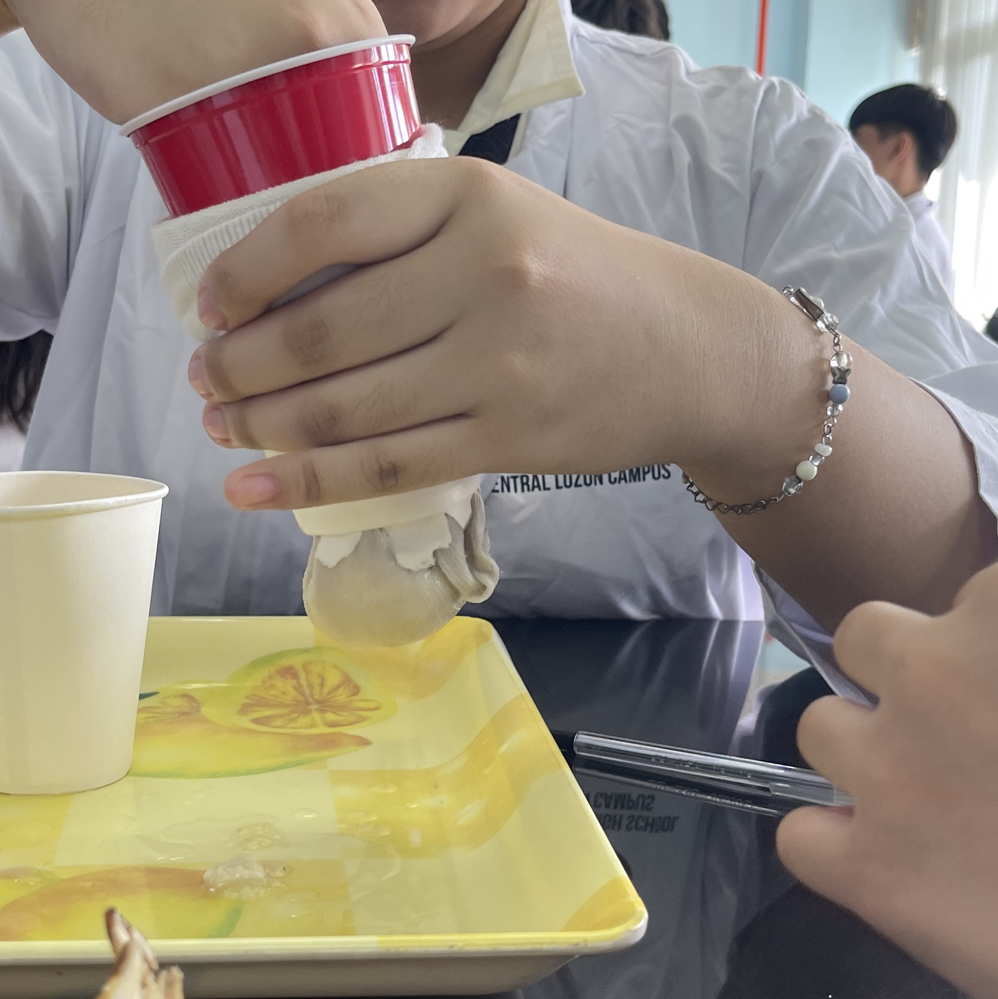
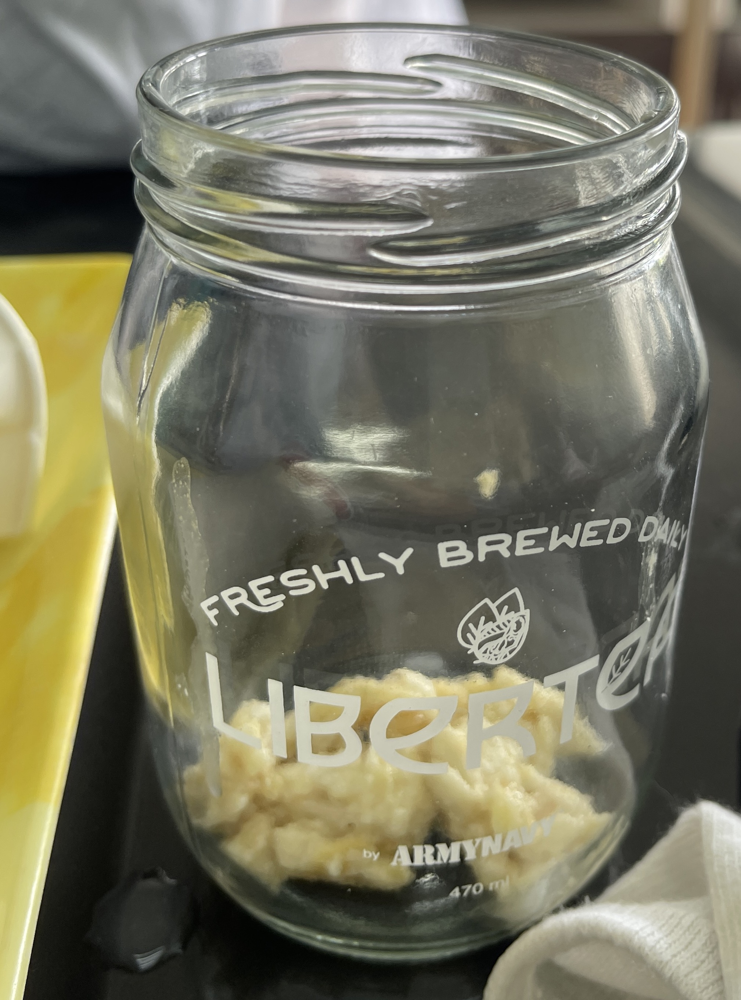
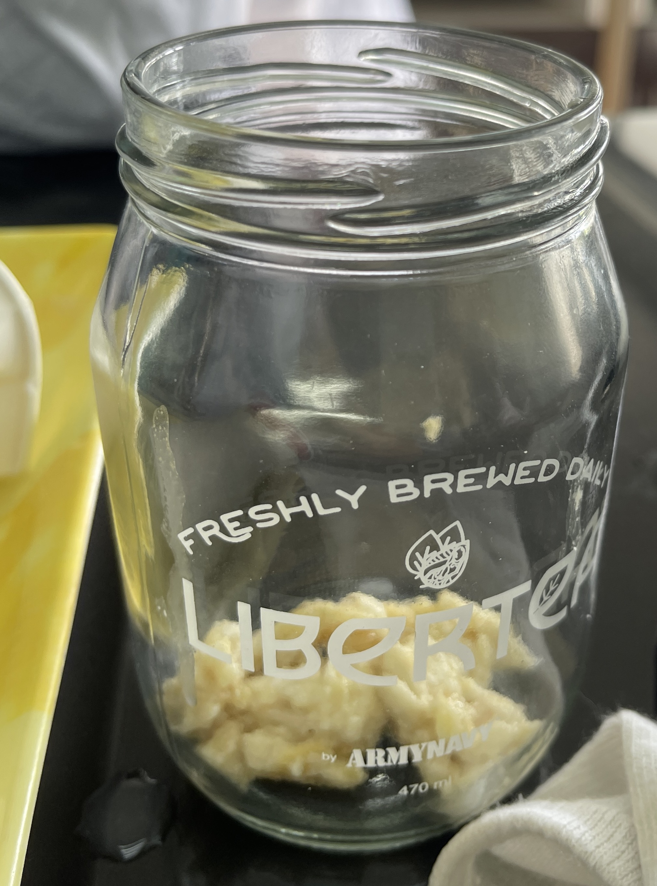

Intro
This laboratory page serves as your guide as you investigate this complex internal network that converts food into the energy source that sustains our existence. Knowing about this amazing process not only satisfies our curiosity but also gives us the ability to make well-informed decisions regarding our food and general health. Imagine utilizing only common household items to break down a meal into its individual parts. You may accomplish just that with our simulation activity, which offers a practical method of understanding the important phases of digestion. By mimicking the functions of the diffent parts of the system, you'll be able to understand the complex choreography that keeps us fed.
Stages of Food Processing
Crushing Stage
Observation: When the bananas and crackers were put into the ziplock bag, they were still whole and undigested. When the water was put into the ziplock bag together with the bananas and crackers, the food started to soften. The ziplock bag expanded when the food entered. The process of crushing the food was made easier due to the liquids added.
Discussion: The process of putting bananas and crackers into the ziplock bag simulates ingestion. The addition of water represents the salivary amylase secreted by the salivary glands. Since the ziplock bag expanded, it acted as the stomach. Crushing the food simulates the mechanical digestion of food in the stomach. Adding the orange juice simulates the acid in the stomach which chemically digests the food. Since digestion in the stomach has occurred, the possible biomolecules present are carbohydrates and protein.

Transfer Stage
Observation: The sock drained a lot of the liquid present in the sock. The tray was the container that caught the liquids drained by the sock. Undigested material, soon to be feces, are left in the sock. By pushing the partially solidified content, elimination of the feces is accomplished.
Discussion: The liquid flowing out of the sock simulates the nutrients from the food needed by the body. The tray represents the body's way of obtaining nutrients from the food. The process of pushing the solidified content or undigested material represents the budy's way to extract the nutrients out of the body.
 

Elimination Stage
Observation: When a hole was cut-out in the sock, it created a passageway for the solidified content. The solidified content exited through the hole and was caught in the jar.
Discussion: The solidified material flowing out of the sock simulates the elimination of feces. The process of pushing the solidified content or undigested material out of the sock represents the rectum and anus.
Simulation of Absorption
Observation: Out of 100 mL of water in the graduated cylinder, 92 mL was left meaning that the 4-fold paper towel absorbed 8 mL.
Discussion: The 4-fold paper towel absorbed the largest amount of water since it provided more surface area for absorption compared to the other paper towels that had one, two, or three folds only. The part of the digestive system that absorbs is the small intestine. The structure of the small intestine coincides with its function since it has a high surface area for absorption. The small intestine is composed of villi which is also composed of microvilli. The small intestine is also the longest compartment in the digestive system, making it a convenient place for absorption in the body.
Simulation of Bile Action
Observation: Both jars have water and oil in them, but jar A has dishwashing liquid. When jar A was stirred, it showed no signs of the oil. When jar B was stirred, it showed how heterogenous the mixture of water and oil is.
Discussion: Bile plays a role in chemical digestion. This means that bile aids in the digestion of fats.
Conclusion
Using common home items, this lab exercise explores the fascinating realm of human digestion in a way that is both accessible and captivating. You can actually see how food is broken down, nutrients are retrieved, and waste is removed by using bananas, crackers, orange juice, and paper towels to simulate the crushing, transfer, and absorption steps. This exercise highlights the complex structure of the digestive system, such as the small intestine's villi, which maximize absorption.